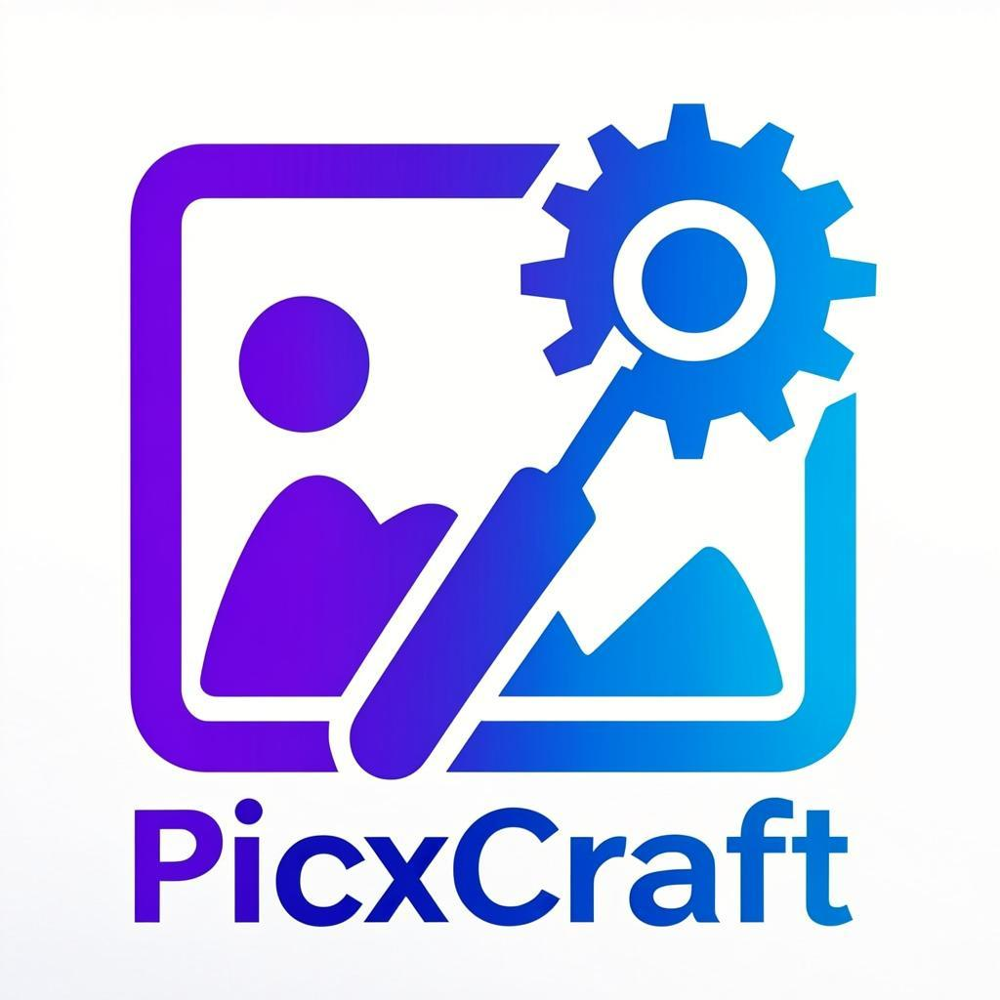

Compress, resize, crop, convert, filter, and edit images directly in your browser. No uploads, no signup, no limits — 100% private.
PicxCraft is a free online image editing toolkit with 114+ tools that run entirely in your browser using the HTML5 Canvas API and WebAssembly. Every image you process stays on your device — your files are never uploaded to any server, making PicxCraft the most private free image editor available online.
Whether you need to compress images to 100KB, resize photos for Instagram, convert PNG to JPG, remove backgrounds, create passport photos, or extract text from images with OCR — PicxCraft has a dedicated tool for it. No account, no watermark, no premium tier, no limits.
All processing happens in your browser. Images never leave your device — zero server uploads.
Powered by WebAssembly and HTML5 Canvas for near-instant image processing.
From basic compression to OCR, passport photos, and social media resizing.
Desktop, tablet, and mobile. Also available as an Android app.
No signup, no watermark, no usage limits, no premium tier.
PNG, JPG, WEBP, BMP, GIF, HEIC, TIFF, AVIF, ICO, PDF and more.
Compress images to exact file sizes for forms, uploads, and email attachments. All processed locally in your browser.
Resize images by pixels, percentage, centimeters, millimeters, or inches. Includes pre-set sizes for every social media platform.
Convert between any image format — PNG, JPG, WEBP, BMP, GIF, HEIC, TIFF, AVIF, ICO, and PDF.
Full editing suite: crop, rotate, flip, add text, watermark, overlay, remove background, apply filters, and extract text with OCR.
Yes. All 114+ image tools are completely free with no signup, no watermarks, and no usage limits. PicxCraft has no premium tier — everything is available to everyone.
No. Every PicxCraft tool runs entirely in your browser using the HTML5 Canvas API and WebAssembly. Your images are never uploaded to any server. This makes PicxCraft the most private free image editor online.
Go to picxcraft.great-site.net and use the "Compress Image to 100 KB" tool. Your image is compressed locally in your browser and you can download the result instantly.
Yes. PicxCraft has dedicated resize tools for Instagram (post, story, reel, portrait), YouTube (thumbnail, banner, profile), Facebook, Twitter/X, LinkedIn, Pinterest, TikTok, Discord, Telegram, and WhatsApp — all with exact pixel dimensions for each platform.
Use the PNG to JPG Converter on PicxCraft. Your image is converted entirely in your browser — no upload required. You can also convert JPG to PNG, any format to WEBP, HEIC to JPG, TIFF to JPG, AVIF to JPG, and more.
Yes. PicxCraft is available as an Android APK that wraps the website into a full-screen native app experience with its own icon and splash screen. Note: The Android app contains ads to support free development. All 114+ tools work the same — images are processed 100% locally and never uploaded. The website version is ad-free. Download the APK from GitHub Releases.
PicxCraft supports PNG, JPG/JPEG, WEBP, BMP, GIF, HEIC, TIFF, AVIF, ICO, and PDF for both input and output across its 114+ tools.
Yes. PicxCraft includes an OCR (Optical Character Recognition) tool that extracts text from images directly in your browser. No server-side processing — everything runs locally.